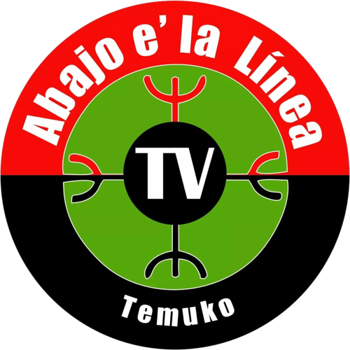

Contamos lo que pasa a orillas del Cautín: organizaciones, deporte, cultura y las noticias que los canales grandes no cubren. Sin filtro corporativo, con la comunidad al centro.
Abajo e' la Línea es un canal de televisión comunitaria transmitiendo en señal abierta desde Temuco.
Nacimos para dar voz a las organizaciones sociales, culturales y territoriales que rara vez aparecen en la pantalla de los canales tradicionales. Cubrimos deporte local, movilizaciones, cultura mapuche y la vida cotidiana del Wallmapu desde una mirada propia.
Somos parte de la red de televisión comunitaria digital de Chile: proyectos autogestionados, con concesión del CNTV, que defienden el derecho a que los barrios y territorios se cuenten a sí mismos.
Si tienes un televisor con sello TVD (Televisión Digital Terrestre) o un decodificador digital, sintoniza el canal 35.1 en Temuco y alrededores.
Mira la transmisión en directo desde este mismo sitio, arriba en la sección "En vivo", las 24 horas.
Escríbenos por nuestras redes sociales y te ayudamos a encontrar la señal en tu comuna.
Fútbol femenino analizado y conversado, desde lo local hasta la escena internacional.
Cobertura de audiencias, movilizaciones, seguridad y actualidad de la región.
Ferias, actividades culturales y organizaciones sociales del Wallmapu.
Cobertura de la actualidad de Temuco y La Araucanía, más nuestras secciones de cultura, deporte y comunidad.
Actividades, talleres y espacios de la escena cultural de Temuco y el Wallmapu.
Historias, tradiciones y voces del mundo mapuche contadas desde la comunidad.
Resultados, análisis y la previa de cada fecha del cuadro local.
Fútbol femenino analizado y conversado, desde lo local hasta la escena internacional.
La agenda y las demandas de juntas de vecinos, agrupaciones y movimientos sociales.
Lo que pasa en los barrios: desde audiencias judiciales hasta la vida cotidiana del territorio.
Escríbenos, síguenos o mándanos tus notas y contenidos desde el territorio.
abajoelalinea.tv@gmail.com